Violin plots showing known cell-type marker gene expression within each deconvolved cell fraction, validating that the deconvolution correctly separated major CNS cell populations. Samples with RIN < 6 excluded. 369 samples · 7 cell types including motor neurons.
The spinal cord is the primary site of lower motor neuron (LMN) degeneration in ALS — the α-motor neurons of the anterior horn that directly innervate skeletal muscle. Unlike cortical regions, the spinal cord deconvolution reference includes a dedicated Motor Neurons fraction, making this the only region where lower motor neuron-specific markers can be directly evaluated. The spinal cord also contains a distinct cellular architecture: oligodendrocyte-rich white matter columns, a large astrocyte population, and, uniquely, ependymal cells lining the central canal. 12 marker categories are assessed here, including the motor neuron and ependymal categories not present in cortical regions.
GFAP astrogliosis is prominent in ALS spinal cord, particularly in the anterior horn adjacent to degenerating motor neurons. Reactive astrocytes in ALS lose their neuroprotective functions and may adopt a neurotoxic A1 phenotype. AQP4 maintains ionic homeostasis and water balance critical for motor neuron survival in the metabolically demanding anterior horn. SLC1A2 (EAAT2) is the most ALS-relevant marker here — approximately 60–70% of sporadic ALS cases show reduced EAAT2 protein or mRNA in spinal cord astrocytes, implicating glutamate excitotoxicity as a central mechanism of lower motor neuron death. ALDH1L1 serves as a pan-astrocyte marker independent of activation state.
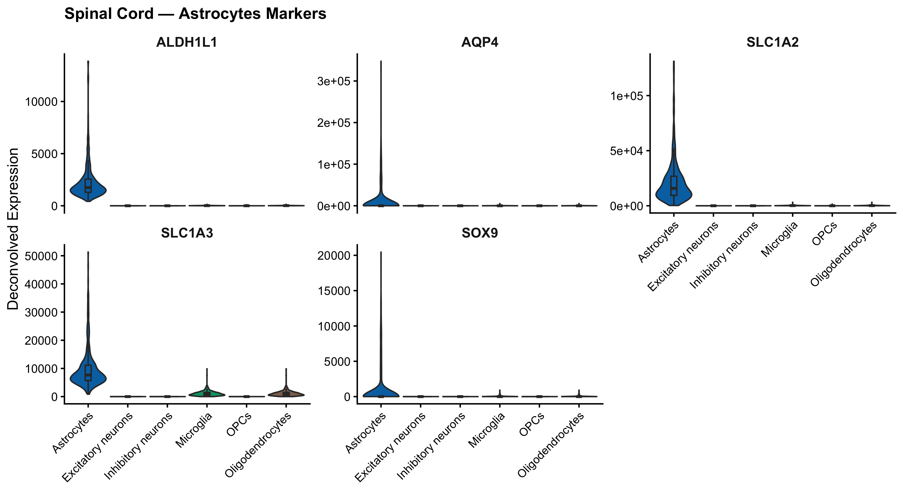
This is the most disease-critical validation category. MNX1 (HB9) is a transcription factor that specifies motor neuron identity during development and remains expressed in adult lower motor neurons — it is essentially exclusive to α-motor neurons. CHAT (choline acetyltransferase) synthesizes acetylcholine, the neurotransmitter at the neuromuscular junction; its loss in spinal cord is a direct marker of lower motor neuron degeneration. SLC18A3 (VAChT) is the vesicular acetylcholine transporter, required for packaging ACh into vesicles. ISL1 (Islet-1) is a LIM-homeodomain transcription factor that maintains cholinergic motor neuron identity. PRPH (peripherin), NEFH, and NEFM are neurofilament proteins that form the structural backbone of the large-caliber axons characteristic of α-motor neurons. Enrichment specifically in the Motor Neurons fraction validates that the deconvolution correctly isolated the most disease-relevant cell population in ALS.
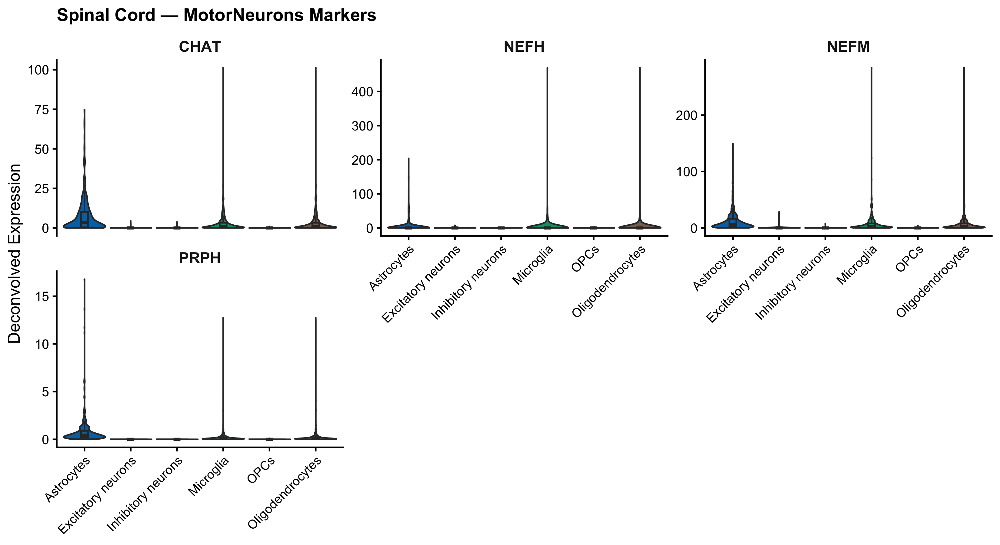
AIF1 (IBA1) marks all microglia and is the primary histological tool for quantifying microglial density in ALS spinal cord. Microglial activation in the anterior horn precedes and accompanies motor neuron loss and is visible by MRI in ALS patients. P2RY12 and TMEM119 indicate homeostatic microglia; their loss indicates transition to a disease-associated microglial state. CX3CR1 mediates fractalkine signaling from neurons to microglia, regulating surveillance and inflammatory responses critical in the ALS anterior horn environment. TYROBP and SPI1 (PU.1) mark the myeloid identity of microglia and are components of TREM2 signaling pathways increasingly implicated in neurodegeneration.
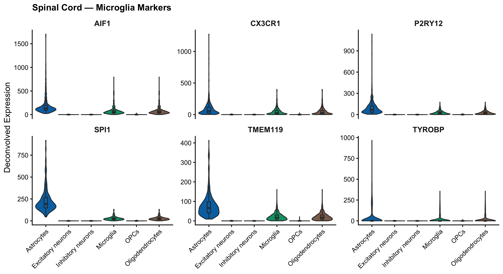
MBP and PLP1 dominate myelin composition in the spinal cord white matter columns (anterior, lateral, and posterior funiculi). The lateral corticospinal tract carries descending upper motor neuron axons and is surrounded by myelinating oligodendrocytes whose integrity is essential for signal conduction. Demyelination of the corticospinal tract is observed in ALS post-mortem tissue. MOG at the outermost lamella and MAG at the periaxonal membrane represent the structural integrity of myelin sheaths around motor axons. MOBP and CLDN11 are compaction markers that ensure electrical insulation. Their selective enrichment in the Oligodendrocytes fraction indicates successful deconvolution of the spinal cord myelin compartment.
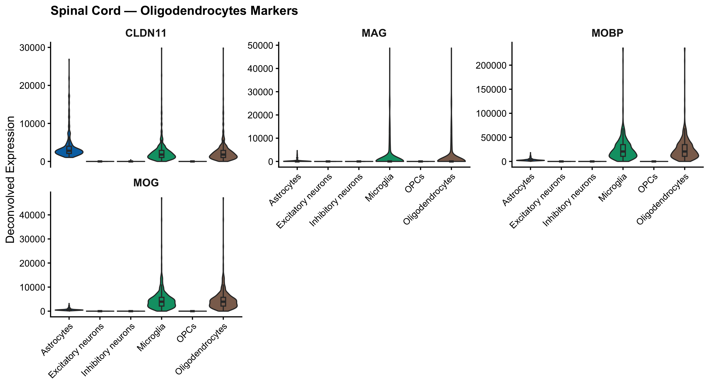
PDGFRA marks OPCs that constitute about 5% of all spinal cord cells. Their capacity for remyelination is critical after axonal injury and in chronic demyelinating conditions. CSPG4 (NG2) identifies OPCs and pericytes — both reside in the spinal cord and some cross-signal with pericyte fractions is expected. VCAN is deposited in the OPC extracellular niche and participates in glial scar formation after spinal cord injury. SOX10 is required for the entire oligodendrocyte lineage and maintains the transcriptional identity of both OPCs and mature oligodendrocytes. OLIG1 drives OPC differentiation and is essential for remyelination responses. Spinal cord OPCs are particularly important in the context of ALS corticospinal tract pathology.
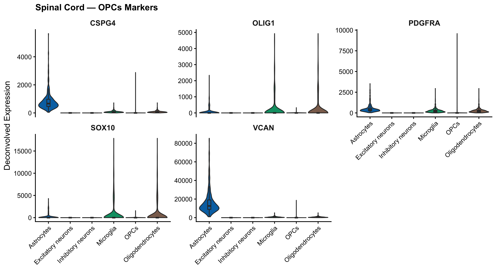
SLC17A6 (VGluT2) is the dominant vesicular glutamate transporter in spinal cord excitatory interneurons, marking glutamatergic neurons in laminae I–VII that modulate sensorimotor integration. Unlike cortex where VGluT1 predominates, VGluT2 is the primary isoform in spinal excitatory circuits. SLC17A7 (VGluT1) marks proprioceptive primary afferents and some dorsal horn interneurons. CAMK2A is expressed in spinal excitatory interneurons mediating pain and reflex circuits. TBR1 has a more restricted expression pattern in spinal cord than in cortex but marks a subset of excitatory interneurons. Excitatory interneurons are relevant to ALS because dysregulated spinal excitatory input contributes to motor neuron hyperexcitability.
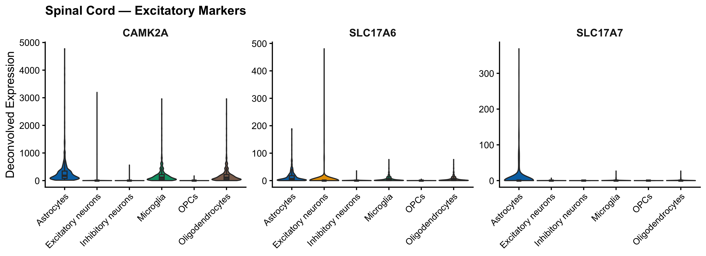
GAD1 and GAD2 mark GABAergic and glycinergic interneurons in the spinal cord dorsal and ventral horns. In the ventral horn, Renshaw cells are inhibitory interneurons that provide recurrent inhibition to motor neurons — their dysfunction may contribute to motor neuron hyperexcitability in ALS. SLC6A1 (GAT-1) performs GABA reuptake in both dorsal and ventral horn inhibitory circuits. SLC32A1 (VGAT) is the vesicular transporter for both GABA and glycine, marking all inhibitory neurons including glycinergic Renshaw cells and Ia inhibitory interneurons that regulate reciprocal inhibition between antagonist muscles. Loss of spinal inhibitory interneuron function is directly linked to the clinical spasticity observed in ALS.
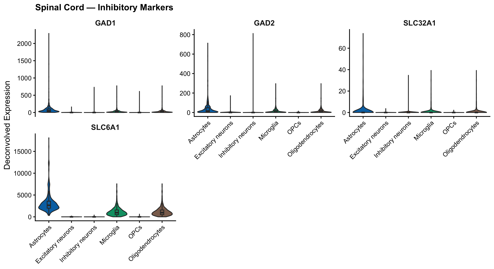
Pan-neuronal markers should be enriched across both excitatory, inhibitory, and motor neuron fractions. RBFOX3 (NeuN) marks all post-mitotic neurons. SNAP25 and SYT1 are components of the SNARE complex for synaptic vesicle fusion. TUBB3 labels neuronal cytoskeleton throughout all neuron subtypes. STMN2 is the most diagnostically relevant gene in this panel for spinal cord: it is the primary target of aberrant TDP-43 splicing in ALS. TDP-43 pathology causes retention of a cryptic exon, creating a truncated, non-functional STMN2 protein. Loss of full-length STMN2 impairs axonal regeneration after injury — a mechanism directly contributing to progressive denervation of motor neurons in ALS spinal cord. Staining intensity of STMN2 in the Motor Neurons fraction specifically may correlate with TDP-43 integrity.
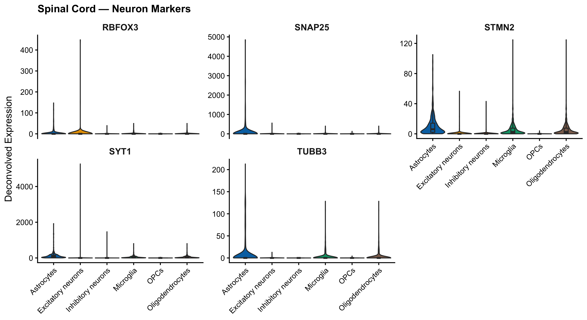
SOX9 is expressed in astrocytes and OPCs throughout the spinal cord and is upregulated in reactive gliosis following motor neuron death. S100B is expressed in astrocytes and some oligodendrocytes, with particularly high levels in Schwann cells of spinal roots — a potential source of signal in lumbar spinal cord samples. PLP1 serves as a reference marker for the oligodendrocyte compartment; its selective enrichment in the Oligodendrocytes fraction versus broader glial distribution validates the inter-glial separation in this region. The spinal cord has a higher white-matter-to-gray-matter ratio than cortex, making accurate oligodendrocyte versus astrocyte separation especially important for downstream WGCNA module interpretation.
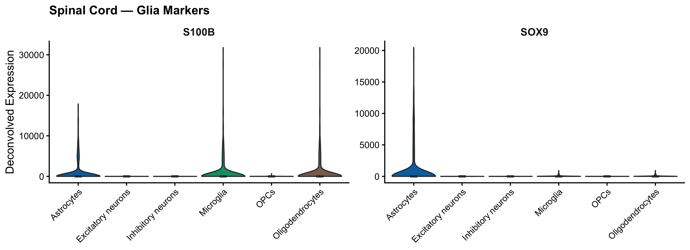
PECAM1, VWF, KDR, FLT1, and EMCN define vascular endothelium. Spinal cord blood vessels are surrounded by a blood-spinal-cord barrier analogous to the blood-brain barrier. ALS is associated with blood-brain/spinal cord barrier dysfunction, potentially elevating endothelial gene expression in affected samples. Since endothelial cells are not a deconvolved fraction here, their signal should be diffusely distributed. However, barrier disruption may introduce a differential signal between ALS and control samples that could influence other fraction assignments. This is an interpretive caveat worth noting when analyzing ALS-specific modules that include vascular marker genes.
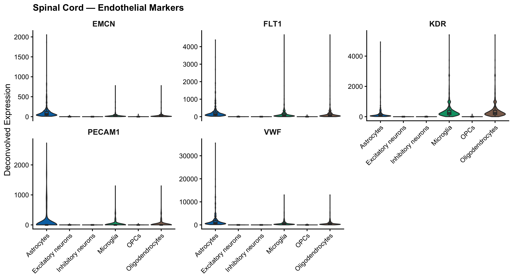
PDGFRB, RGS5, MCAM, ACTA2, and CSPG4 define the pericyte identity. Spinal cord pericytes regulate microvascular tone and blood-spinal-cord barrier integrity. CSPG4 (NG2) is of particular interest in spinal cord where NG2-expressing cells include both OPCs and pericytes — the dual expression pattern means this marker alone cannot distinguish the two populations. ALS-associated pericyte dysfunction has been proposed to contribute to early blood-spinal-cord barrier breakdown preceding motor neuron loss, suggesting these markers may show altered distributions between ALS and control samples even in non-pericyte deconvolved fractions.
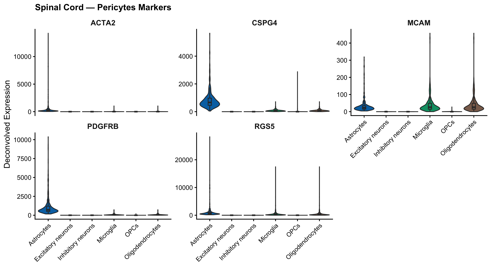
Ependymal cells line the central canal of the spinal cord and form a barrier between the CSF and spinal parenchyma. This marker category is unique to the spinal cord analysis and not assessed in cortical regions. FOXJ1 is the master transcription factor for ciliogenesis and marks multiciliated ependymal cells that drive CSF flow. PIFO (Pirouette) and TPPP3 are cilia-associated proteins expressed in ependymal cells, with TPPP3 specifically marking the inner dynein arm of motile cilia. Ependymal cells are not a deconvolved fraction, so non-specific distribution is expected. Nonetheless, their markers serve as a useful quality check: concentrated signal in any specific deconvolved fraction would suggest contamination of the reference with ependymal-like cells.
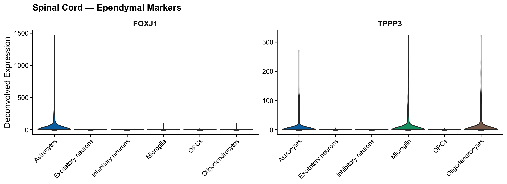